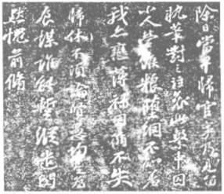
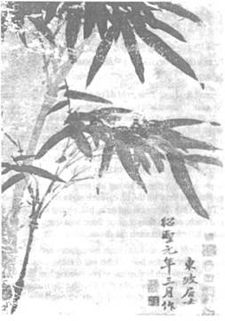

Đông Pha rời kinh tháng 7 năm 1071 để tới Hàng Châu. Luôn tám chín năm sau, ông không được về kinh, hết ở Hàng Châu rồi tới Mật Châu, Từ Châu, Hồ Châu. Thời đó là thời thi hứng của ông rất dồi dào, viết được rất nhiều bài thơ, bài từ có đủ giọng: buồn rầu hoặc khoáng đạt, mỉa mai hoặc phẫn uất.
Trên đường lại Hàng Châu, Đông Pha ghé thăm Tử Do làm giáo thụ ở Trần Châu, ở chơi với em tới ngoài tết Trung thu.
Hai anh em rất quí mến nhau mà hình dung, tính tình rất khác nhau. Tử Do mặt tròn, má phính và cao lớn, nên Đông Pha làm thơ giễu rằng “cúi đầu xuống đọc thi thư, ngẩng lên thì đầu đụng nóc nhà.[55] Đông Pha trái lại tầm thước, không gầy, không béo, lưỡng quyền cao, trán rộng, mắt sáng quắc, râu đẹp. Tử Do thâm trầm, cương nghị; Đông Pha hồn nhiên, hay cười đùa, tính tình vui vẻ, dễ thân với mọi người, nhưng đôi khi nóng nảy.
Tử Do nhiều lần khuyên anh nên giữ lời, Đông Pha nhận là đúng, nhưng bảo:
- Anh biết tính anh bộp chộp. Khi anh thấy cái gì trái ý thì bực mình lắm, như thấy con ruồi đậu trên thức ăn, phải xua nó đi. Cái ngày dâng sớ lên Hoàng Thượng về vụ tân pháp, anh cũng sợ bị chặt đầu. Mấy ông bạn thân cũng ngại cho anh. Nhưng rồi anh bảo họ: “Hoàng thượng có giết anh thì anh cũng không ân hận. Nhưng tôi không để cho các bác hưởng cái vui là thấy tôi bị chặt đầu đâu”. Thế là cả bọn cùng cười.
Tử Do nói:
- Anh có nhận thấy không? Ngày nào mình được nhàn nhã, không có việc gì làm thì ngày đó có vẻ dài gấp hai những ngày khác. Vậy nếu mình được sống nhàn nhã suốt đời - chẳng hạn bảy mươi năm - thì cũng như mình sống được trăm bốn chục tuổi.
Tư tưởng về chính trị của họ giống nhau, nhưng cách xử sự thì ngược nhau. Tử Do đắn đo từng lời, suy đi tính lại rồi mới hành động: Đông Pha nông nổi, không nghĩ tới hậu quả của hành động.
Văn thơ của hai anh em cũng khác nhau. Tử Do không nổi tiếng về thơ, nhưng văn có giọng trầm tĩnh, ý tưởng sâu sắc; Đông Pha có thiên tài về cả thơ lẫn văn, ý tưởng đột ngột, hùng tráng mà khoáng đạt.
Tôi xin giới thiệu dưới đây bài Hoàng Châu Khoái tai đình kí của Tử Do để độc giả so sánh bút pháp của hai anh em họ Tô.
黄 州 快 哉 亭 寄
江 出 西 陵, 始 得 平 地, 其 流 奔 放 肆 大, 南 合 湘 沅,
北 合 漢 沔, 其 涕 益 張, 至 菸 赤 璧 之 下, 波 流 浸 灌, 與 海 相 若.
清 何 張 君 夢 得 謫 居 齊 安,
即 其 盧 於 西 南 爲 亭,
以 覽 觀 江 流 之 勝; 而予 兄 子 瞻 名 之 曰 快 哉.
蓋 亭 之 所 見, 南 北 百 里, 東 西 一 合,
濤 瀾 洶 涌, 風 雲 開 閘, 晝 則 舟 楫 出 没 於 其 前,
夜 則 魚 龍 悲 嘯 於 其 下, 變 化 倏 忽,
動 心 駭 目,
不 可 久 視. 今 乃得 玩 之 几 席 之 上,
舉 目 而 足, 西 望 武 昌 諸 山, 岡 陵 起 伏, 草 木 行 列; 胭 消 日 出,
漁 夫 樵 父 之 舍,
皆 可 指 數; 此 其 所 以 爲 快 哉 者 也. 至 於 長 州 之 津,
故 城 之 墟, 曹 孟 德, 孫 仲 謀 之 所 睥 睨,
周 渝, 陸 遜 之 所 馳, 騖, 其 流 風 遺 晰 亦 足 以 稱 快 世 俗(...)
士 生 於 世, 使 其 中 不 字 得,
將 何 往 而 非 病,
使 其 中 坦 然, 不以 勿 傷 性,
將 何 適 而 非 快? 今 張 君 不 以 適 爲 患, 秋 會 計 之 餘 功,
而 自 放 山 始 之 間, 此 其 中 宜 有 以 過 人 者;
將 蓬 戶 壅 牖, 無 所 不 快 而 況 乎 濯 長 江 之 清 流,
悒 西 山 之 白 雲, 窮 耳目 之 勝 以 自 適 也 哉!
不 然, 連 山 絕 壑, 長 林 古 木,
振 之 以 清 風, 照 之 以 明 月,
此 皆 騷 人 思 士 之 所 以 悲 傷 樵 悴 而 不 能 塍 者,
烏 睹 其 爲 快 也 哉!
HOÀNG CHÂU KHOÁI TAI ĐÌNH KÍ
Giang xuất Tây Lăng, thủy đắc bình địa; kì lưu bôn phóng tứ đại, nam hợp Tương, Nguyên, bắc hợp Hán, Miện, kì thế ích trương, chí ư Xích Bích chi hạ, ba lưu tẩm quán, dữ hải tương nhược.
Thanh Hà Trương quân Mộng Đắc trích cư Tề An, tức kì lư chi tây nam vi đình, dĩ lãm quan giang lưu chi thắng; nhi dư huynh Tử Chiêm danh chi viết Khoái Tai. Cái đình chi sở kiến, nam bắc bách lí, đông tây nhất hợp[56], đào lan hung dũng, phong vân khai hạp, trú tắc chu tiếp xuất một ư kì tiền, dạ tấc ngư long bi khiếu ư kì hạ, biến hóa thúc hốt, động tâm hãi mục, bất khả cửu thị. Kim nãi đắc ngoạn chi kỷ tịch chi thượng, cử mục nhi túc, Tây vọng Vũ Xương chư sơn, cương lăng khởi phục, thảo mộc hàng liệt; yên tiêu nhật xuất, ngư phu tiều phủ chi xá, giai khả chỉ số; thử kì sở dĩ vi khoái tai giả dã. Chí ư trường châu chi tân, cố thành chi khư, Tào Mạnh Đức, Tôn Trọng Mưu chi sở bễ nghễ, Chu Du, Lục Tốn chi sở trì vụ, kì lưu phong di tích diệc túc dĩ xưng khoái thế tục. (...)
Sĩ sinh ư thế, sử kì trung bất tự đắc, tương hà vãng nhi phi bệnh; sử kì trung thản nhiên, bất dĩ vật thương tính, tương hà thích nhi phi khoái? Kim Trương quân bất dĩ thích vi hoạn, thu cối kế chi dư công, nhi tự phóng sơn thủy chi gian, thử kì trung nghi hữu quá nhân giả; tương bồng hộ ủng dũ, vô sở bất khoái; nhi huống hồ trạc Trường Giang chi thanh lưu, ấp tây sơn chi bạch vân, cùng nhĩ mục chi thắng dĩ tự thích dã tai!
Bất nhiên, liên sơn tuyệt hác, trường lâm cổ mộc, chấn chi dĩ thanh phong, chiếu chi dĩ minh nguyệt, thử giai tao nhân tư sĩ chi sở dĩ bi thương tiều tụy nhi bất năng thăng giả, ô đổ kì vi khoái dã tai!
Nghĩa:
ĐÌNH “KHOÁI THAY” Ở HOÀNG CHÂU
Sông Trường Giang ra khỏi Tây Lăng mới gặp đất bằng, dòng nước băng băng rộng lớn, phía nam hợp với sông Tương, sông Nguyên, phía bắc hợp với sông Hán, sông Miện, thế lực càng mạnh, đến chân núi Xích Bích, luồng sóng tưới thuần, mênh mông như biển.
Ông Thanh Hà Trương Mộng Đắc bị đày đến Tế An, cất một cái đình ở phía tây nam nhà ông để ngắm cảnh đẹp trên sông và anh tôi là Tử Chiêm (tức Đông Pha) đặt tên cho đình là “Khoái thay”.
Là vì ở đình trông ra thấy được nam bắc trăm dặm, đông tây hợp một, sóng vỗ ầm ầm, gió mây mở đóng, ngày thì thuyền bè qua lại ở trước mặt, đêm thì nghe cá rồng kêu thảm ở dưới sâu, biến hóa đột ngột, động lòng kinh mắt, không thể coi lâu được. Nay thì có thể ngồi trên giường chiếu mà ngắm cảnh, ngước mắt là coi đủ tất cả, phía tây thì nhìn các núi ở Vũ Xương, sườn đỉnh nhấp nhô, cây cỏ bầy hàng, mây khói tan rồi mặt trời ló dạng, nhà của ngư ông và tiều phu đều hiện rõ mồm một, vì vậy mà gọi đình đó là “Khoái thay”. Đến như bến rộng bãi dài nền cũ thành xưa, nơi mà Tào Mạnh Đức và Tôn Trọng Mưu[57] ngấp nghé, mà Chu Du và Lục Tốn[58] rong ruỗi thì di tích, lưu phong[59] kia cũng đủ cho ta khen là khoái thay thế tục.
(Bỏ một đoạn mười hàng)
Kẻ sĩ sinh ở đời, nếu trong lòng không ung dung tự tại thì tới đâu mà không buồn; nếu trong lòng thản nhiên, không vì ngoại vật mà làm tổn thương bản tính thì tới đâu mà chẳng khoái. Nay Trương quân không vì bị giáng chức mà ưu tư, tính toán sổ sách rồi còn dư thời giờ thì tự thả mình trong khoảng sơn thủy, chắc là trong lòng có chỗ hơn người đây, dẫu có ở căn nhà lá tranh, cửa sổ làm bằng vò hũ đập bể thì cũng không có gì là không khoái, huống hồ lại gội rửa trên dòng trong của Trường Giang, ngắm mây trắng của núi tây, có những cảnh tuyệt vui tai đẹp mắt để mà tự thỏa mãn! Nếu không vậy thì dù núi có liên tiếp, hang có thăm thẳm, rừng có rộng, cây có cổ, lại có gió mát lay động, có trăng thanh chiếu sáng thì cũng là những cảnh mà tao nhân và kẻ sĩ bất đắc ý cho là bi thương tiêu điều không sao chịu nổi, chứ có đâu thấy được là khoái!
Tử Do tả ba cái vui của Trương Mộng Đắc: vui ngắm cảnh, vui hoài cổ và vui vì trong lòng thanh thản, không bận tâm vì bị giáng chức; cái vui thứ ba quan trọng hơn cả vì có nó mới hưởng được hai cái vui trên, thành thử ông khen cảnh mà thực là khen bạn. Suốt bài không rời khỏi chữ “khoái”, bút pháp tinh mật.
Ăn tết Trung thu xong, hai anh em rủ nhau lại thăm Âu Dương Tu ở cách đó trên trăm cây số, ở chơi hai tuần nữa rồi Đông Pha mới lại nhiệm sở. Lúc từ biệt, họ quyến luyến nhau như một cặp tình nhân: tình huynh đệ họ thực đẹp.
Hàng Châu đời Tống là một cảnh thần tiên, có người đã gọi nó là “Thiên đường ở trần thế”.
Nó là tên một phủ, mà cũng là tên tỉnh lị tỉnh Chiết Giang. Tỉnh lị nằm trên bắc ngạn sông Tiền Đường, (chính dòng sông mà nàng Kiều đã gieo mình xuống để chấm dứt cảnh mười lăm năm đau khổ). Ở cuối con kinh Vận Hà; phía nam nó dựa lưng vào núi Ngô Sơn, phía tây nó soi bóng trên Tây Hồ, nổi danh là nơi linh tú bậc nhất Trung Hoa nhờ cảnh đồi núi, hồ, biển tuyệt đẹp, nhờ không khí mát mẻ (vì đây đã thuộc về phương Nam), nhờ dân trong miền tính tình vui vẻ, nam thanh nữ tú, tiếng ca hát ngâm thơ vang lên trong các vườn hoa, các trà thất, trên các bờ nước, dưới các hàng liễu.
Chúng ta không biết rõ sự phồn thịnh của Hàng Châu thời Tô Đông Pha ra sao, nhưng đọc tập du kí của Marco Polo, một người Ý trước vua nhà Nguyên cho làm thái thú (?) Hàng Châu ở cuối thế kỉ XIII, ta cũng tin được rằng nhiệm sở của Tô là một nơi rất sầm uất.
Marco Polo gọi Hàng Châu là Quinsay[60] (có lẽ phiên âm một tiếng của đời Nguyên). Theo ông, châu thành cách biển hai mươi lăm cây số, chu vi được 160 cây số,[61] dân số năm 1275 tới một triệu người, lớn hơn hết các châu thành khác phương Đông, hơn xa Venise, nơi sinh quán của ông mà đẹp hơn Venise vì có cảnh nước lẫn cảnh núi.
Đường phố và kinh rạch rất nhiều và rộng; cầu lớn nhỏ có tới 12.000 chiếc, xây khum khum như cầu vòng, rất cao, thuyền buồm qua lọt được. Châu thành có mười ngôi chợ và vô số cửa tiệm. Con đường chính lát đá, từ cửa đông qua cửa tây, rộng tới bốn chục bước chân, chạy song song với một dòng kinh. Hai bên bờ kinh đó, cất nhiều kho lớn bằng đá để chứa các hàng hóa xuất cảng và nhập cảng từ Mã Lai, Ấn Độ, Ba Tư...
Đường phố sửa sang rất kĩ, nước mưa không đọng vì có mương; xe cộ dập dìu qua lại, những chiếc sang trọng có màn và nệm bằng lụa, ngồi được sáu người. Có những nhà tắm công cộng, đủ nước lạnh và nước nóng, nhưng nước nóng chỉ để cho người ngoại quốc dùng.
Các hồng lâu nhiều tới nỗi Marco Polo không dám đưa ra con số; ả nào cũng rất đẹp, bận toàn đồ tơ, phấn hương ngào ngạt, “không thể tưởng tượng được y phục và nữ trang của họ đắt giá tới bực nào”.
Nhà cửa chen chúc nhau, đa số bằng gỗ và tre, có nhà cao tới mười tầng (!). Nhưng công việc phòng hỏa rất chu đáo: ngày đêm có lính canh, và thấy nơi nào có đám cháy thì báo hiệu liền và lại cứu. Rác trong châu thành đổ xuống thuyền rồi chở đi. Mỗi năm phải vét lại các kinh một lần.
Một con đê dài 250 cây số ngăn nước biển ở phía bắc Hàng Châu. “Thuyền biển lớn như những ngôi nhà, cánh buồm giương lên như mây phủ trên biển, bánh lái dài cả chục thước”. Mỗi chiếc thuyền có tám hoặc mười hàng chèo, mỗi chiếc chèo dùng bốn trạo phu. Thuyền đậu đầy trên các kinh lớn. Thương mại cực phồn thịnh.
Người Trung Hoa đổi vàng, bạc, tiền đồng, chì, đồ sứ lấy hương, tê giác, ngà voi, san hô, hổ phách, ngọc trai, đồi mồi, đồ vải... của các xứ khác. Công nghệ cũng rất phát đạt: đồ sứ, đồ sơn, gấm vóc, quạt, nữ trang.
Theo Lâm Ngữ Đường, thời Tô Đông Pha, Hàng Châu chỉ mới phát triển bằng nửa như vậy (nửa triệu dân), nhưng so với các phủ khác, cũng đứng vào hàng đầu. Nơi đó phồn thịnh nhờ chung quanh đất thấp, có nhiều hồ, lại ở xa biên giới, ít bị quấy phá.
Một thi hào bậc nhất trong nước mà lại làm quan một nơi thắng cảnh bậc nhất trong nước thì thật là một “giai ngẫu”. Thần Tôn trích Tô tới đó mà thực là thương ông. Không khí ở đây khoáng đạt, ấm áp, không tù túng, lạnh lẽo như ở triều đình. Cảnh miền Nam này lá xanh hoa thắm, gió mát trăng trong, không mênh mông cát vàng, ào ào gió thổi như phương Bắc.
Đông Pha yêu cảnh yêu người, mới tới Hàng Châu đã coi đó là quê hương thứ nhì của mình; và dân Hàng Châu cũng quí ông, tới nỗi khi ông bị triều đình bắt giam, họ dựng bàn thờ ở khắp đường phố cầu xin nhà vua tha ông; hơn nửa ngàn năm sau du khách lại thăm Phượng Sơn, Tô Đê để tìm lại hình ảnh của ông thì dân Hàng Châu có người bất bình rằng sao du khách lại bảo Đông Pha quê ở Thiểm Tây, chứ không phải ở Chiết Giang!
Hàng Châu được nhờ ông rất nhiều: khoan nói tới chính tích của ông, chỉ nội cái hào quang thiên tài của ông cũng làm cho dân chúng được vẻ vang, sung sướng: họ vui tươi hơn, thanh nhã hơn, yêu văn thơ, nghệ thuật hơn; mà ông cũng được nhờ Hàng Châu rất nhiều: ông được thấy những cảnh mê hồn, được hưởng những lúc tuyệt thú, hồn thơ ông dào dạt, tài năng ông phát triển, mới mẻ thêm, phong phú thêm.
Ông cùng vợ con tới Hàng Châu ngày 28 tháng 11 năm 1071. Dinh thự của ông ở trên ngọn Phượng Sơn, bao quát được cảnh sông Tiền Đường với những cánh buồm qua lại trước mặt và cảnh Tây Hồ phẳng lặng như tấm gương, ba mặt là đồi núi lấp ló những mái chùa rêu phong, những cửa son của các biệt thự, Tây Hồ này cũng có tên là Tiền Đường hồ, Tây tử hồ vì trong một bài thơ, ông ví hồ với nàng Tây Thi: ẨM HỒ THƯỢNG SƠ TÌNH PHỤC VŨ
飲 湖 上初 晴 復 雨
水 光 瀲 滟 晴 方 好
山 色 空 蒙 雨 亦 奇
欲 把 西 湖 比 西 子
淡 妝 濃 抹 總 相 宜
Thủy quang liễm diễm tình phương hảo,
Sơn sắc không mông vũ diệc kì.
Dục bả Tây hồ tỉ Tây tử,
Đạm trang nùng mạt tổng tương nghi.
UỐNG RƯỢU TRÊN HỒ
TRỜI MỚI TẠNH RỒI LẠI MƯA
Trời tạnh, long lanh hồ đã đẹp,
Mưa phùn, mịt mịt núi càng xinh.
Tây hồ đâu khác nàng Tây tử
Trang điểm cùng không, nét vẫn tình.
Ở phía Nam và Bắc, có núi cao, trong hồ thời đó chỉ có một con đê do thi hào Bạch Cư Dị đời Đường đắp, sau Tô Đông Pha đắp thêm một con đê nữa, và bây giờ hồ chia làm ba phần: hồ trong, hồ ngoài, hồ sau. Nổi danh nhất là Tây Hồ thập cảnh, thời nào cũng làm đề tài cho thi nhân ngâm vịnh. Mỗi buổi sáng thức dậy, mở cửa sổ, vợ chồng Đông Pha nhìn mây núi và lâu đài chiếu xuống mặt hồ. Các du thuyền chạm trổ, sơn màu và các thuyền câu mộc mạc nhẹ nhàng lướt trên mặt nước. Nhất là về tối, mặt hồ đầy du thuyền, hằng ngàn ánh đèn chiếu xuống nước như một cảnh hoa đăng và nửa đêm tiếng đàn tiếng sáo, tiếng ca tiếng hát vẫn còn văng vẳng đưa vào dinh thự của Tô, hai ba giờ sáng mới tắt.
Trà đình, tửu quán nằm sát ở bờ hồ, sau những hàng liễu thướt tha. Các cửa hàng đầy những vật quí và lạ, từ tơ lụa gấm vóc, ấm chén, bình hoa, đèn quạt tới đồ chơi và kẹo bánh cho trẻ, và hai thế kỷ sau, Marco Polo phải chóa mắt về sự phồn thịnh của Hàng Châu, Venise không sao sánh kịp.
Tô Đông Pha thích cảnh quá, tới nỗi có cảm tưởng rằng kiếp trước mình đã sinh nơi đây. Một hôm vào thăm một cảnh chùa, mới tới cổng, ông ngạc nhiên thấy cảnh như quen thuộc, nói với người cùng đi rằng có chín mươi bực đưa lên chùa, đếm thì thấy đúng. Rồi ông còn tả được những cây, đá, sân, vườn ở sau chùa nữa. Thời đó thuyết luân hồi rất được nhiều người tin, và người ta còn truyền lại rằng Trương Phương Bình có lần cũng vào thăm một cảnh chùa, bảo bạn kiếp trước mình tu ở đây, chép kinh tới đoạn đó thì bỏ dở, họ vào chùa, mở kinh đó ra, thấy nét chữ giống hệt chữ của Trương; Trương cầm bút chép tiếp.
Tuy nhiên, Đông Pha cũng có điều bất như ý: chức vụ thông phán buộc ông phải xử tội, và ông không nhẫn tâm xử những bần dân bị giam cầm vì không tuân luật lệ mới của Vương An Thạch, những luật lệ mà ông đã đả kích. Vương đã quốc hữu hóa việc bán muối; dân Hàng Châu từ trước vẫn sản xuất và bán muối nên phản đối.
Ngày cuối năm 1071, mới tới được hơn một tháng, ông đã phải xử một người dân can tội buôn lậu muối. Ông thi hành pháp luật, nhưng chua xót tự ví cảnh của mình với cảnh người dân đó:
Trừ nhật đương tảo qui,
Quan sự nãi kiến lưu.
Chấp bút đối chi khấp,
Ai thử hệ trung tù.
Tiểu nhân doanh hầu lương,
Huy võng bất tri tu.
Ngã diệc luyến bạc lộc,
Nhân tuần [thất] thất qui hưu[62].
Bất tu luận hiền ngu
Quân thi vị thực mưu.
Thùy năng tạm túng khiển,
Mẫn nhiên quí tiền tu.
Nghĩa:
Ngày cuối năm, đáng lẽ về sớm
Mà vì việc quan phải ở lại.
Cầm bút lên, nước mắt tuôn rơi.
Buồn cho kẻ bị giam trong tù.
Kẻ nghèo lo kiếm ăn
Sa vào lưới pháp luật mà không biết hổ.
Ta cũng vì ham cái lộc nhỏ,
Vẫn giữ chức, trái với ý muốn về hưu của mình.
Chẳng nên luận hiền hay ngu[63]
Đều là lo miếng ăn như nhau cả.
Ai có thể tạm cởi cho được đây?
Ta cúi đầu mà xót xa tủi nhục.

Bút tích Tô Đông Pha
(Coi phiên âm và dịch nghĩa ở trang 117) [64]
Rồi ông viết thư tâm sự với Tử Do:
“Có những điều trước kia anh lấy làm xấu hổ thì bây giờ anh không xấu hổ nữa. Anh ngồi nhìn bọn tội nhân rách rưới bị quất. Miệng anh “dạ, dạ” với thượng cấp mà lòng anh thì muốn nói “không, không”. Đánh mất tư cách của mình thì giữ chức cao sang mà làm gì?”.
Càng chán cảnh công đường thì Đông Pha càng tìm cảnh thiên nhiên mà cảnh thiên nhiên ngay ở dưới chân ông. Xuống khỏi đồi là sông hồ; hai chục cây số chung quanh, chỗ nào cũng có bờ liễu, rừng thông, suối trong, thác trắng, đình đài, đền miếu và ba trăm sáu chục ngọn chùa. Cảnh đã đẹp, dân chúng lại phong lưu, tổ chức rất nhiều đình đám, hội hè. Tháng nào cũng có tết: nguyên tiêu, thanh minh, hàn thực rồi đoan ngọ, trung nguyên, trung thu, trùng cửu, chưa kể những ngày tế thần của mỗi làng. Trai thanh gái lịch dập dìu, én liệng trên không, mây trôi trên nước, màu sắc cảnh vật thay đổi thực huyền ảo.
Đông Pha có hôm dắt vợ con, có khi rủ bạn bè đi chơi hồ. Các cô lái đò thấy bóng dáng Tô thông phán, đua nhau mời chào vì họ tuy ít học nhưng đã nghe danh ông, lại quí thái độ trang nhã, đôn hậu mà thân mật của ông. Ông mướn một chiếc thuyền nhỏ, thả trên mặt hồ, nghĩ được câu thơ nào chép ngay lên giấy tốt và người quen kẻ lạ tranh nhau xin, vì thơ ông hay, chữ ông đẹp, vừa già vừa tươi, thành một thư pháp riêng đời Tống. Bà thì bổ dưa, bóc hạt sen cho người hầu nấu chè, có khi mua cá của một ngư ông mới câu lên không phải để nấu nướng mà để phóng sinh lấy phúc. Trên hồ có một bọn chuyên câu cá bán như vậy và có con được phóng sinh hai ba lần. Những ngày hội, cảnh mặt hồ thật vui, tiếng hát của các ca nhi vang lên lanh lảnh, như đáp nhau từ thuyền nọ qua thuyền kia.
Chu vi hồ khoảng hai chục cây số, bờ hồ chỗ nào cũng liễu rũ, và thấp thoáng sau mành liễu là những ngọn chùa cổ kính.
Mặt hồ luôn luôn thay đổi, vừa mới trắng xóa vì hạt mưa thì đã trong vắt như trời xanh:
望 湖 樓 醉 書
黑 雲 翻 墨 未 遮 山
白 雨 跳 珠 亂 入 船
卷 地 風 來 忽 吹 散
望 湖 樓 下 水 如 天
VỌNG HỒ LÂU TÚY THƯ
Hắc vân phiên mặc vị già sơn,
Bạch vũ khiêu châu loạn nhập thuyền.
Quyển địa phong lai hốt xúy tán,
Vọng hồ lâu hạ thủy như thiên.
KHI SAY, VỊNH CẢNH HỒ, LẦU
Mây đen nửa núi mực bôi lên,
Mưa trắng rơi châu trút xuống thuyền.
Cuốn đất gió đâu lùa thổi hết,
Dưới lầu, màu nước tựa thanh thiên.
Nhất là mùa hè, nước hồ chắc cũng trong như hồ Trúc Bạch ở Hà Nội, có thể đếm được những con cá lượn ở dưới sâu.
Họ bỏ thuyền, leo núi, chán nghe tiếng sóng vỗ thì nghe tiếng chim kêu. Ông rất thích cảnh chùa, nhiều lần leo núi một mình, tới một khóm trúc hay một gốc thông cạnh chùa, cởi áo ra, nằm đánh một giấc. Các chú tiểu chỉ xa xa đứng nhìn, lấy làm vinh dự rằng chùa mình được một thi hào quá bộ tới. Sau khi ông mất, một vị sư bảo rằng hồi trẻ làm tiểu có lần được thấy ông cởi trần nằm ngủ như vậy, trên lưng có bảy nốt ruồi giống như thất tinh của chòm sao Bắc Đẩu. Chắc vị sư đó đã tưởng tượng ít nhiều. Các vị sư quí ông mà ông cũng thích giao du với họ và tính tình ông phóng khoáng hay bỡn cột, nên thỉnh thoảng phá các vị hòa thượng. Một vị hòa thượng nọ nổi tiếng là nghiêm, tín đồ mà muốn vào tịnh thất của ông để được ông ban phúc thì phải trai giới trước đã. Dĩ nhiên phụ nữ không được vào. Đông Pha lần đó dắt vài người bạn và cả một ca nhi vào thăm chùa. Tới cửa trai phòng của nhà sư, bọn người theo ông ngừng cả lại. Ông dắt ca nhi vào, nhà sư cau mày. Ông bảo để làm một bài thơ xin lỗi và ca nhi sẽ hát lên nếu hòa thượng cho phép nàng mượn chiếc mõ để gõ nhịp. Vị hòa thượng đành hỉ xả và Đông Pha đưa một bài cho ca nhi hát. Bài đó là một bài từ khúc có giọng bỡn cợt và chính vị hòa thượng nghe xong cũng phải cười. Trong thơ phương Tây, ta thường nghe thấy tiếng chuông thánh đường, nhưng ít thấy bóng dáng các linh mục, giám mục. Trái lại thơ Trung Hoa và Việt Nam thường nhắc tới các nhà sư, mà nhắc tới nhà sư thì luôn luôn nhắc tới mỹ nữ để giễu như thơ Tô Đông Pha, thơ Nguyễn Công Trứ. Nội điểm đó cũng đủ cho ta thấy tinh thần tôn giáo của phương Đông và phương Tây khác nhau ra sao.
Lần khác Đông Pha đùa các nhà sư như sau. Tiếng điểu (là chim) thời đó có một nghĩa xấu khi dùng làm tiếng lóng, đại loại cũng như tiếng chim (chuột) của ta.
Đông Pha bảo một nhà sư, tên là Phật Ấn: “Cổ nhân thường dùng tiếng tăng (nhà sư) để đối với tiếng điểu, như trong hai câu của Giả Đảo (đời Đường):
鳥 宿 池 邊 樹
僧 敲 月下門
Điểu túc trì biên thụ,
Tăng xao nguyệt hạ môn”.
Chim đậu cây bến nước,
Sư gõ cửa dưới trăng.
Tôi vẫn phục cổ nhân đối như vậy hay tuyệt.
Thời nào thi sĩ cũng gắn bó với ca nhi, nhất là các thi sĩ đời Đường, đời Tống. Ca nhi giữ một địa vị thực quan trọng trong thi ca Trung Quốc. Chính họ có công gợi hứng cho thi nhân, hơn nữa canh tân các thể thơ, biến thi thành từ. Ngay các vị tể tướng, như Hàn Kì, Âu Dương Tu, các nhà Nho đức độ và nghiêm trang như Phạm Trọng Yêm, Tư Mã Quang cũng làm thơ làm từ tả tình của ca nhi và tình cảm của mình đối với ca nhi. Nhạc Phi, danh tướng ái quốc bậc nhất, trong một bữa tiệc cũng làm một bài từ cho ca nhi hát. Suốt đời Tống, có lẽ chỉ có hai anh em họ Trình (Trình Hạo và Trình Di) là tránh xa các ả như tránh rắn độc. Tương truyền một môn đệ của Trình Di viết hai câu tả cái mộng thấy một phụ nữ đương giấc nồng, mà cụ Trình vội la: “Đồ quỉ!” Chu Hi cũng vậy. Đúng là các cụ ấy “cư kính”, thấy gái đẹp thì kính nhi viễn chi.
Tô Đông Pha, trái lại tự nhận là mình rất tục. Ông nói đùa với bạn: “Các phép tu tiên tôi đều theo được, trừ có phép tiết dục. Khó khăn vô ngần. Này nhé, Thiên cổ kì nhân như Tô Vũ,[65] nghị lực phi thường, ai triết nhân cho bằng, vậy mà cũng kiếm một cô vợ Hung Nô, có con với nàng, thì hạng phàm nhân như mình, tiết dục sao được chứ”.
Cho nên bữa tiệc nào người ta đặt ông hay ông đãi người ta thì cũng có ca nhi, và bọn này quây quần chung quanh ông, xin ông chép cho một bài thơ trên quạt. Bà Tô bẩm tính hiền hậu, quí chồng là bậc danh sĩ, lại biết chồng có nghệ sĩ tính chứ không bạc tình, nên không hề ghen.
Mà quả thực ông rất đứng đắn, yêu thanh sắc đấy mà không lụy về thanh sắc. Trái lại, chính thanh sắc đã giúp ông giải phóng thể từ, bỏ niêm luật, mở rộng phạm vi cho nó, từ những cảnh mơ mộng hương phấn qua khu vực khoáng đạt, hào hùng của tình cảm.
Từ phát sinh từ đời Đường, là những bài thơ có thể phổ nhạc cho ca nhi hát, như Vương Chi Hoán, Vương Hàn có những khúc Lương châu từ tả cảnh sa mạc hay chiến trường ở biên cương, Bạch Cư Dị và Ôn Đình Quân có những khúc Ức Giang Nam tả cảnh sông nước, hoa cỏ Giang Nam.
Qua đời Ngũ Đại, từ rất thịnh hành, lời rất đẹp, rất du dương, nhưng cũng rất ủy mị, chỉ ca tụng những cảnh trăng hoa (Hoa gian tập) cùng tâm sự những mỹ nữ xa người yêu (Tần phụ ngâm), giọng thường đầy nước mắt, đúng là của một thời loạn.
Đầu đời Tống, từ vẫn giữ cái di phong của đời Ngũ Đại, ngay Âu Dương Tu cũng không thoát khỏi ảnh hưởng đó.
Những câu được ca tụng nhất thời đó đại thể như:
揚 柳 岸 曉 風 殘 月
Dương liễu ngạn hiểu phong tàn nguyệt,
Bờ dương liễu, trăng tàn gió sớm.
của Liễu Vĩnh, đẹp thì đẹp thật, nhưng buồn làm sao; hoặc câu:
桃 李 嫁 春 風
Đào lý giá Xuân phong[66]
của Trương Tiên, lãng mạn tình tứ.
Chưa bằng những câu tả cái thú mê hồn với một ca nhi:
Tiêu hồn đương thử tế,
Hương nang ám giải,
La đái khinh phân,
Mạn doanh đắc thanh lâu bạc hãnh danh tồn[67].
(MÃN ĐÌNH PHUƠNG)
Gặp lúc tiêu hồn,
Nhẹ chia giải lụa,
Ngầm cởi túi thơm,
Chỉ hơn được lầu xanh bạc hãnh danh còn.
Đông Pha hùng tâm sửa đổi phong khí đó.
Xin độc giả nghe giọng ông ngâm:
念 奴 嬌
大 江 東 去
浪 淘 盡 千 古 風 流 人 物
故 壘 西 遍
人 道 是 三 國 周 郎 赤 璧
亂 石 崩 雲
驚 淘 烈 岸
捲 起 千 堆 雪
江 山 如 畫
一 時 多 少 豪 傑
遙 想 公 瑾 當 年
小 喬 初 嫁 了
雄 姿 英 發
羽 扇 綸 巾
談 笑 閒
强 虜 灰 飛 煙 滅
故 國 神 遊
多 情 應 笑 我 早 生 花 發
人 生 如 夢
一 撙 還 酹 江 月
NIỆM NÔ KIỀU[68]
Đại giang đông khứ,
Lãng đào tận thiên cổ phong lưu nhân vật.
Cổ lũy tây biên,
Nhân đạo thị Tam Quốc Chu Lang Xích Bích,
Loạn thạch băng vân,
Kinh đào liệt ngạn,
Quyển khởi thiên đôi tuyết
Giang Sơn như họa
Nhất thời đa thiểu hào kiệt.
Dao tưởng Công Cẩn đương niên,
Tiểu Kiều sơ giá liễu,
Hùng tư anh phát,
Vũ phiến luân cân.
Đàm tiếu gian,
Cường lỗ hôi phi yên diệt,
Cố quốc thần du,
Đa tình ưng tiếu ngã tảo sinh hoa phát.
Nhân sinh như mộng
Nhất tỗn hoàn lỗi giang nguyệt.
NIỆM NÔ KIỀU
Sông dài băng chảy,
Sóng cuốn hết thiên cổ phong lưu nhân vật.
Lũy cũ phía tây,
Người bảo là Xích Bích thời Chu Du Tam Quốc.
Đá loạn sụt mây,
Sóng gầm vỗ bến,
Cuốn lôi ngàn đống tuyết.
Nút sông như vẽ,
Một thời ít nhiều hào kiệt.
Nhớ Công Cẩn thời đó,
Tiểu Kiều khi mới cưới,
Anh hùng tư cách,
Quạt lông khăn là,
Lúc nói cười
Giặc mạnh[69] tro bay khói hết.
Cố quốc hồn về,
Đa tình chắc cười ta tóc đà sớm bạc.
Đời người như mộng,
Chén này để tạ trăng nước.
Giọng hoài cổ triền miên mà bi hùng.
Tương truyền một hôm Đông Pha hỏi một người:
- Từ của tôi với từ của Liễu Vĩnh ra sao?
Đáp:
- Từ của Liễu Lang Trung chỉ để cô gái mười bảy mười tám cầm phách ngà mà ca câu: “Dương liễu ngạn hiểu phong tàn nguyệt”, còn từ của ngài thì phải để cho tráng sĩ ở Quan Tây gảy đàn tỳ bà bằng đồng, gõ phách bằng sắt mà hát câu “Đại giang đông khứ” thì mới hợp.
Lời đó chỉ đúng một phần. Thiên tài của Đông Pha có nhiều vẻ. Đọc bài Thủy điệu ca đầu ở chương VI, độc giả sẽ thấy từ của ông cũng có bài rất du dương, tươi đẹp không kém Liễu Vĩnh.
Nhờ phong cảnh đẹp và không khí tưng bừng ca nhạc ở Hàng Châu mà Đông Pha mới lưu ý tới thể từ, cải cách nó và nổi danh là một từ gia bậc nhất đời Tống.
Ông hưởng cái thú nghe hát, nhưng không say đắm tới đến nỗi mất tư cách, có lần thuyết phục được một thiếu nữ có tài có sắc, và nàng thoát khỏi cảnh lầu xanh mà đi tu.
Ông ta là một nghệ sĩ chân chính, nhận thức cái đẹp của thanh sắc mà cũng quí cái đẹp của tâm hồn.
Chính hồi ở Hàng Châu ông bắt đầu tập tham thiền, có lẽ do ảnh hưởng các vị hòa thượng bạn thân của ông.
Đêm nào ông cũng nằm thật ngay ngắn, thở đều đều, tập trung tinh thần vào hơi thở, dù có ngứa cũng nhất định không gãi, và ông khoe rằng có làm chủ được thể chất thì mới làm chủ được tinh thần, rồi mới hiểu được những huyền bí của vũ trụ. Ông tìm hiểu cơ thể ông và nghiên cứu về y dược.
Nhưng Hàng Châu không phải chỉ có liễu, sen, mẫu đơn, có trăng nước và tiếng đàn tiếng địch. Còn có công đường và nhà lao nữa.
Tội nhân quá nhiều, nhốt đầy các khám: mười bảy ngàn người, đại đa số là vì thiếu thuế, thiếu nợ chính phủ, hoặc vì buôn lậu muối. Ở triều ông chỉ nghe thấy nỗi khổ của dân, tới Hàng Châu ông mới được trông tận mắt, thấy cảnh dân bì bõm dưới bùn như vịt, như heo để vét kinh chở muối, mà lại không có muối để ăn, có kẻ ba tháng ròng toàn ăn nhạt, măng và rau cỏ, vì chính quyền giữ độc quyền bán muối, giá muối cao quá. Ông cảm xúc phát ra những lời thơ mỉa mai:
豈 是 聞 韶 忘 肉 味
邇 來 三 月 食 無 鹽
Khởi thị văn Thiều vong nhục vị[70]
Nhĩ lai tam nguyệt thực vô diêm.
Há phải nghe Thiều quên vị thịt,
Đến nay ăn nhạt đã ba trăng.
Ông thấy cái hại của bọn quan lại quá sốt sắng, ép dân vay tiền của triều đình, lại mở các quán rượu, các quán chơi ở ngay bên cạnh chỗ phát tiền để vét túi dân mà thu thật nhiều lợi cho triều đình, thành thử bọn con trai vay được tiền rồi, tiêu hết ngay ở quán, chỉ đem về làng được thêm vài tiếng lóng; còn các ông già “chống gậy mang cơm đi lĩnh tiền, nhưng tiền chỉ qua mắt rồi lại tay không, lúc mới có cũng vui với trẻ được một lúc rồi già nửa năm phải làm vất vả trong thành để trả nợ”:
買 得 兒 童 笑 音 好
一 年 彊 半 在 城 中
Mãi đắc nhi đồng tiếu âm hảo,
Nhất niên cường bán tại thành trung[71].
Nhưng vì ghét tân pháp quá, Tô có lúc tỏ ra bất công. Đắp đê ngăn nước biển rồi tháo nước mặn ra, biến đổi đồng chua thành ruộng lúa, là một công việc mở mang đất đai rất có lợi cho dân, chính dân cũng hoan nghênh, mà ông chê họ là “ham lợi quên mình”, rồi mỉa:
東 海 若 知 明 主 意
應 教 斥 鹵 變 桑 田
Đông Hải nhược tri minh chủ ý,
Ưng giao xích lỗ biến tang điền.
Biển đông giá biết ý minh chúa,
Biến hẳn đất mặn thành biển dâu!
Vương An Thạch sửa đổi chương trình học, dạy thêm môn luật, đó cũng là một ý mới mẻ, ông bảo đời Nghiêu, Thuấn làm gì có môn luật học, mà nước vẫn bình trị:
讀 書 萬 卷 不 讀 律
致 君 堯 舜 終 無 術
Độc thư vạn quyển bất độc luật,
Trí quân Nghiêu, Thuấn chung vô thuật.
Ngày nay chúng ta đọc những câu thơ phúng thích đó chỉ mỉm cười, cho là vô hại, nhưng thời đó phe Vương An Thạch bực mình lắm, vì thơ được lan truyền trong dân chúng rất mau, đến tai Vương Sằn, một vị phò mã,[72] bạn thân của Đông Pha, Vương gom lại được mấy chục bài in thành một tập, nên triều đình không thể làm ngơ được. Chính vì những bài thơ đó mà sau này Đông Pha suýt mất mạng.

Tranh vẽ trúc của Tô Đông Pha
[55] Nguyên văn bài thơ:
Uyển Khâu tiên sanh trường như khâu
Uyển Khâu học xá tiểu như châu.
Thường thời đê đầu tụng kinh sử,
Hốt nhiên khiếm thân ốc đả đầu. (BT).
[Nguyên văn chữ Hán bốn câu đầu của bài Hí Tử Do 戲子由 như sau:
宛丘先生長如丘，宛丘學舍小如舟。
常時低頭誦經史，
忽然欠伸屋打頭。(Goldfish)].
[56] Hợp 合: Trên mạng có bản chép là 舍 (xá, xả), lại có bản chép là 捨 (xả). Trang http://www.rwhxw.com/Item/1659.aspx chép là xá 舍 và giảng nhất xá 一舍 là ba mươi dặm; thời xưa mỗi lần hành quân, đi 30 dặm [rồi mới nghỉ], gọi là một xá. Theo trang này thì bản Án Nguyên tuyển chép là nhất hợp 一合; bản Tứ bộ tùng san của nhà Thương vụ ấn thư quán sửa lại thành nhất xá 一舍. (Goldfish).
[57] Tức Tào Tháo và Tôn Quyền đời Tam quốc.
[58] Cũng là nhân vật đời Tam Quốc.
[59] Là phong hóa lưu truyền lại.
[60] Có sách chép là Kinsai và cho rằng tiếng Cathay trỏ Trung Hoa do tiếng đó mà ra.
[61] Theo Yule thì Marco Polo lầm, vì dịch chữ lí (dặm) của Trung Hoa ra chữ mile, sự thực một lí chỉ bằng 575 mét chứ không phải 1.000 mét.
[62] Đông Pha mới đầu hạ chữ bất, sau chấm chấm ở bên (coi trên hình số II), bỏ chữ đó mà thay vào chữ thất vì vậy mà câu này có sáu chữ. (Coi bút tích của ông ở sáp đồ trang 95) [Tức hình ở sau phần dịch nghĩa. (Goldfish)].
[63] Hiền ở đây trỏ tác giả, ngu trỏ người dân buôn lậu bị tội, hiền ngu chỉ nên hiểu là người có học và người vô học.
[64] Tức bài thơ trên. Nguyên văn:
除日當早歸，官事乃見留。 執筆對之泣，
哀此繫中囚。小人營餱糧，墮網不知羞。
我亦戀薄祿，因循失歸休。 不須論賢愚，
均是為食謀。 誰能暫縱遣，閔默愧前修。
(Theo http://vip.book.sina.com.cn/book/chapter_212286_187694.html. (Goldfish).
[65] Tức Tô Vũ chăn dê đời Hán.
[66] Trong Đại cương văn học sử Trung Quốc, cụ Nguyễn Hiến Lê dịch là: “Đào mận gả gió xuân”. (Goldfish).
[67] Nguyên văn: 銷魂當此際，香囊暗解，羅帶輕分，漫贏得青樓薄倖名存。(http://www.thivien.net/viewpoem.php?ID=12491). (Goldfish).
[68] Mãn Đình Phương, Niệm nô kiều đều là tên những khúc hát.
[69] Trỏ Tào Tháo.
[70] Do câu trong Luận ngữ (chương Thuật nhi): Tử, tại Tề, văn Thiều tam nguyệt bất tri nhục vị, nghĩa là Không Tử ở nước Tề, nghe nhạc Thiều, (thích quá) ba tháng không biết mùi thịt.
[71] Trong Cổ văn Trung Quốc, bài Hỉ vũ đình kí, cụ Nguyễn Hiến Lê dẫn cả 4 câu: “Trượng lê phù phạn khứ thông thông, Quá nhân thanh tiền chuyển thủ không. Mãi đắc nhị đồng tiểu âm hảo, Nhất niên cường bán tại thành trung: Chống gậy, mang cơm, lật đật đi lĩnh tiền mượn của vua, nhưng tiền mượn chỉ qua mắt rồi lại tay không. Lúc mượn cũng mua vui với trẻ được một lúc, rồi một năm thì nửa năm phải vất vả ở trong thành để trả nợ”. Hai câu: Khởi thị văn Thiều vong nhục vị, Nhĩ lai tam nguyệt thực vô diêm” và bốn câu đó trích trong bài Sơn thôn ngũ tuyệt 山村五絕 (xem http://zh.wikisource.org/zh-hant/%E5%B1%B1%E6%9D%91%E4%BA%94%E7%B5%95). (Goldfish).
[72] Anh hoặc em rể của Thần Tôn.